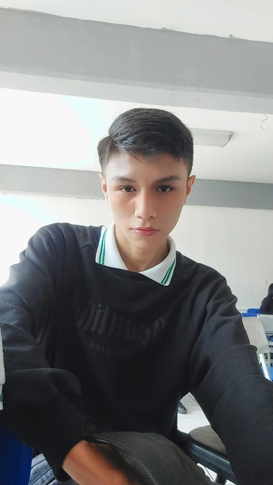

Mi curriculum
Carlos Francisco

mi objetivo de este curso es poder tener un buen conocimiento
para poder poco a poco buscar trabajo ya que tenga la bases necesarias
Mi educacion
- Escuela Primaria - de 6 a 12
- Secundaria con taller en TURISMO - de los 13 a los 15
- Preparatoia concluida con carrera tecnica en INFORMATICA - 16 a 19
- Proximo a estudiar la universidad con la carrera de Ingenieria en Desarrollo de Sofware - 19 a 22
Mis trabajos
Actualmente no tengo trabajo pero por eso tomo el curso para tener mas conocimiento y cuando tenga las bases necesarias poder tener empleo
Habilidades
Me gustaria como primeria opcion didicarme al front end y despues ser back end
Certificaciones u logros
- En primaria gana medalla de oro por tener el numero mas alto en saltos de cuerda
- en secuandaria obtuve un certificado por buena conducta
- En prepa gane un RECONOCIENTO por competir en programacion basica en PSEINT
CONTACTAME
PASATIEMPOS